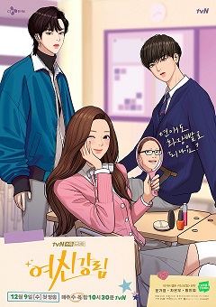

| 1. OPERATION: TRUE LOVE |
Shim knows that better than anyone, having dated her indifferent boyfriend, Minu Kang, for years. She sometimes wishes she could be more like her charismatic stepsister, Ra-im, who seems to have it all. But life takes a turn for the weird when Su-ae discovers Jellypop, a sentient flip phone, in her locker. Jellypop has a lot to say about her love life, especially as Su-ae drifts further away from Minu and finds herself running into Minu’s friend, Eunhyeok. Add to the mix a growing suspicion that Minu and Ra-im might be more than friends, and Su-ae might need a miracle to navigate the ups and downs of high school romance! |
 |
| 2. SEASONS OF BLOSSOM |
“Seasons of Blossom” tells the story of love and friendship of 18-year-old youths at Seoyeon High School. The webtoon depicts the butterfly effect that occurs from a tragic incident six years ago as it begins to affect the current teens living in the present. |
|
| 3. TRUE LOVE |
First published in Naver Webtoon since April 2, 2018, it centers on a young woman who mastered the art of makeup in her teenage years in order to transform herself into a gorgeous "goddess" after being bullied and discriminated because of being perceived as ugly. |
|  |
| 4. DISCONNECTED FROM REALITY |
Just like any other night, Hyeseong spends his time playing games with an online friend, Nana. But when Nana goes AFK and accidentally leaves his mic on, Hyeseong hears the voice of a panicked girl crying for help, saying she’s been kidnapped. |
|